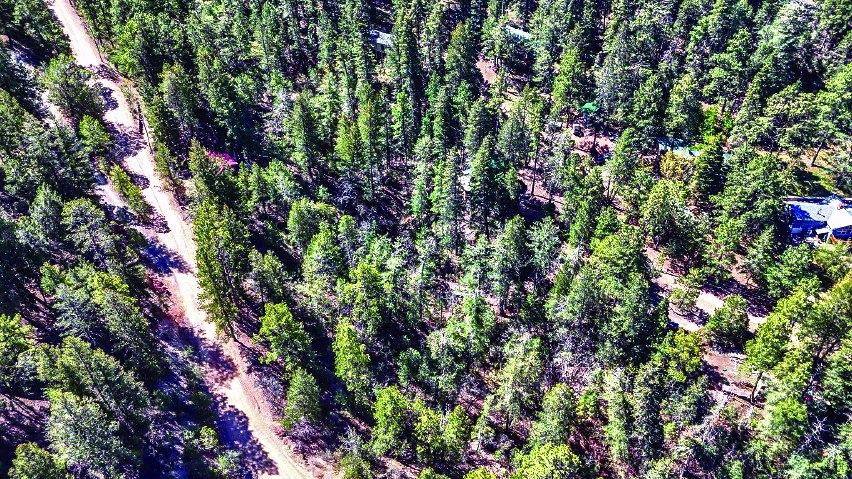
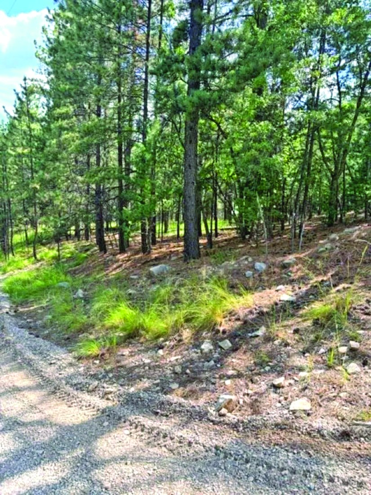

$41,500 19 Running Deer Tr MLS #172493
Property
$41,900
| Price | $41,900 |
|---|---|
| Listed by | Aspen Trails Realty |
| Print edition | October 2026 Otero County Edition, page 3 |
About this property
Two Lots - $41,900
Interested in this property?
Office phone: 575-682-7778
Aspen Trails Realty
Please contact the listing agent or company directly. The Real Estate Roundup is a publisher and does not show or sell properties.
Listing details and photo reproduced from the October 2026 print edition of The Real Estate Roundup (page 3), as printed. Prices and availability can change after publication — confirm with the listing agent.
More Homes
 $39,900
0.565 Acre Property in James Canyon
0.565 acres
James Canyon, New Mexico
MLS #173270
$39,900
0.565 Acre Property in James Canyon
0.565 acres
James Canyon, New Mexico
MLS #173270

$39,000 Property MLS #173082 $36,000
00 Aspen Trail, Cloudcroft NM
Cloudcroft, New Mexico
MLS #172657
$36,000
00 Aspen Trail, Cloudcroft NM
Cloudcroft, New Mexico
MLS #172657
 $54,000
0000 Chautauqua Canyon Blvd
Cloudcroft, New Mexico
MLS #172498
$54,000
0000 Chautauqua Canyon Blvd
Cloudcroft, New Mexico
MLS #172498
 $55,000
Property
MLS #172369
$55,000
Property
MLS #172369